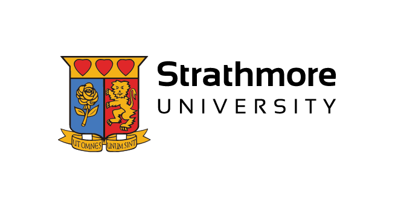
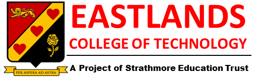
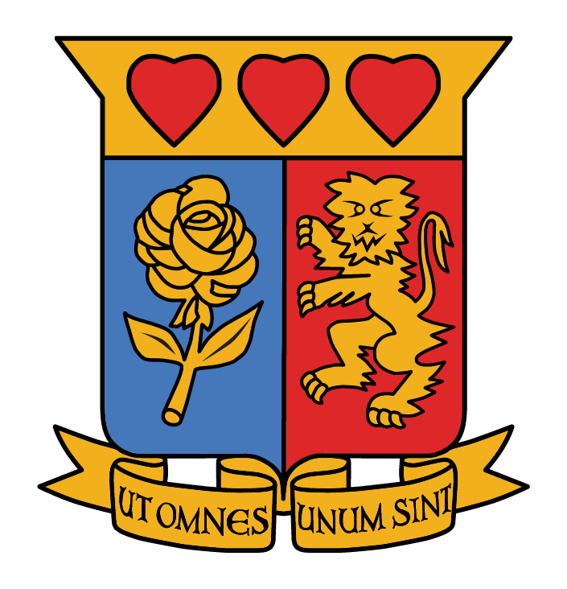
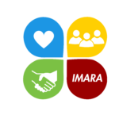

Our shared strategic purpose
Safeguarding members’ retirement. Promoting financial freedom.
SETSPF serves eligible Strathmore staff through prudent investment, accountable governance, clear communication and service excellence—all focused on fostering financial independence.
Our purpose
The Strategy 2025–2030 guides every decision.
Our mission is to preserve and transform members’ retirement through prudent investment and fostering financial independence.
Our vision is safeguarding members’ retirement by promoting financial freedom. We deliver it through five strategic pillars: Investment; Communication & Engagement; Audit, Risk & Compliance; Governance; and Operations & Service Excellence.
The Fund at a glance
Steady stewardship since 1990.
- Nature of the Fund
- A staff provident fund serving eligible Strathmore employees.
- Fund value
- Over KES 3 billion as at 30 July 2026.
- How we work
- Through accountable governance and professional support.
- Who we serve
- 1,132 active members across the Strathmore family as at 30 July 2026.
Who we serve
One Fund for the Strathmore family.
Our members are drawn from organisations under the umbrella of Strathmore Educational Trust Registered Trustees (SERT).
Strathmore School

Eastlands College of Technology

Strathmore Educational Trust Registered Trustees
Strathmore Research and Consultancy Centre

Imara Educational Foundation
Our member promise
Personalised attention at every important moment.
Through our #TukoFomNaIRR clinics and Secretariat support, we make time for individual questions, clear explanations and practical next steps.
One-to-one retirement guidance
We review benefit statements, balances, contributions, IRR, projected savings and AVC options in a clear, supportive conversation.
Support when it matters
Respectful assistance through career changes, retirement planning and family benefit enquiries.
Accessible member education
Member forums and retirement clinics create a safe space to learn, ask questions and plan with confidence.
Mission, vision & values
The principles behind every decision.
Our mission
Preserving and transforming members' retirement.
Through prudent investment and fostering financial independence.
Our vision
Safeguarding members' retirement by promoting financial freedom.
Building retirement confidence for the Strathmore community.
Our values
Collegiality. Service. Integrity. Innovation. Excellence.
Five commitments that shape how we govern, work together and serve our members.
What our values mean
Values made visible through action.
These commitments guide how the Board makes decisions, how we care for members and beneficiaries, and how we build trust for the long term.
01
Collegiality
Board members respect one another’s commitment to our shared purpose. We work together to understand and meet the needs of members and beneficiaries.
02
Service
We exist to serve. We place the welfare of members and beneficiaries above self-interest, pursuing the collective good with humility and care.
03
Integrity
We act with honesty, straightforwardness and openness in every interaction, earning the trust of our members, Sponsor and stakeholders.
04
Innovation
We welcome creativity and new ideas, continually improving our services to deliver greater value and a better member experience.
05
Excellence
We fulfil our obligations with consistency, focus and a long-term view—always acting in the best interests of our members.
Governance
Accountability that safeguards members’ retirement.
Governance is one of our five strategic pillars. Trustees and specialist professional partners provide oversight, independent advice and effective day-to-day administration with integrity and excellence.
Meet the trusteesBoard oversight
Strategic direction, accountability and policy stewardship.
Professional support
Specialist expertise in investment, audit, risk and compliance.
Operations & service excellence
Clear communication and practical assistance through the Secretariat.
Frequently asked questions
Find answers to your frequently asked questions to educate and inform you.
Go to pageLet’s make it clear